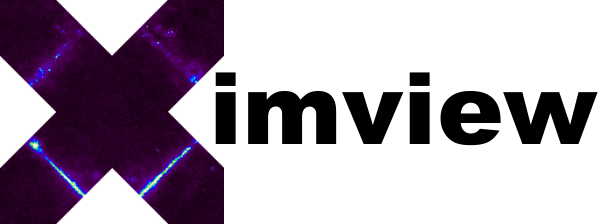

Image display for astronomy
Help Topics
Features
- Google Maps style panning and zooming
- Reads & returns images to IDL command line
- Blinking between multiple images
- Colour-coded comparison between images
- Polarization display using Hue, Saturation, Value
- Image statistics from boxes and Regions Of Interest
- Peak fitting
- Full support for FITS WCS astrometry
- Full support for HEALPix including CUT4 (pixel-indexed) format
- Recognises FITS and many standard image formats (TIFF, PNG,…)
- Colour scales and scaling algorithms to handle the full gamut of astronomical images
- Efficient handling of large images on X-server displays over LAN links
J. P. Leahy
Jodrell Bank Centre for Astrophysics
jpl@jb.man.ac.uk